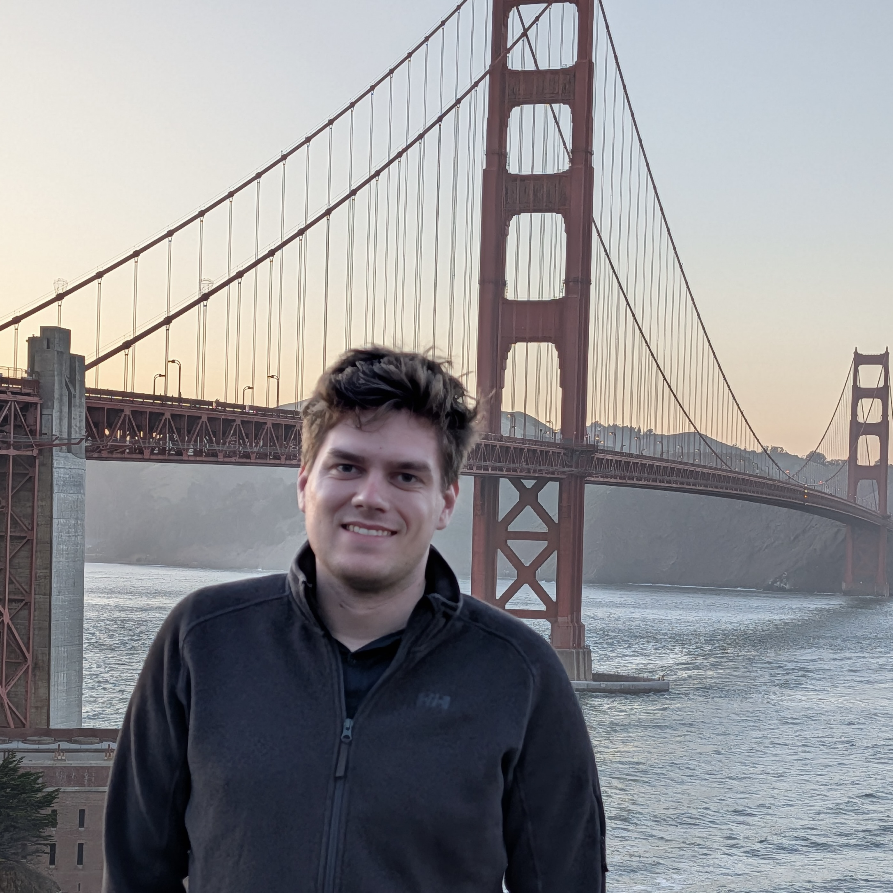

I am a PhD student at the Chair of Robotics, Artificial Intelligence and Real-time Systems at the Technical University of Munich, advised by Prof. Dr.-Ing. habil. Alois C. Knoll.
My research studies how robotic foundation models can learn robust, generalizable manipulation skills for contact-rich, tolerance-critical automotive final assembly. I'm doing an industrial PhD in collaboration with Volkswagen, bringing learning-based autonomous systems into real manufacturing environments.
I'm happy to talk about foundation models for robotics, Vision-Language-Action models, or force-aware manipulation. Feel free to get in touch.

Robotic foundation models — and Vision-Language-Action (VLA) models in particular — show strong cross-task generalization in household and lab settings, but it remains largely open how well they transfer to industrial assembly, where parts vary, tolerances are tight, and contact dynamics and safety constraints dominate.
My work asks to what extent such models can learn robust, scalable assembly skills that generalize across contact- and tolerance-critical tasks. I'm interested in force- and geometry-aware perception and control, hierarchical policies that pair high-level task reasoning with compliant low-level control, evaluation methodology and benchmarks for contact-rich manipulation, and continual, safe adaptation under changing conditions.
Simulation-Based Machine Learning in Robotics (IN0012, IN2106, IN4328), Technical University of Munich.